- Employing Kalman Filter to supplement slowly sampled ToF measurements
- React quickly enough to stop car at set distance from wall
Objectives
Lab 7 Tasks
- Estimation of drag and momentum
- Initialization of KF (Python)
- Implementation and testing of KF in Jupyter
- Implementation of KF on the Robot
Introduction
A Kalman Filter is a recursive algorithm that estimates the state of a dynamic system from measurements, when the system is noisy.
It works in two steps: Prediction and Update.
- Prediciton, uses the state space equation to... predict what value the ToF would measure
- Update, uses a new measurement to update that prediction

Estimation of drag and momentum
To begin developing our Kalman Filter, we need to estimate our drag (d) and mass (m) coefficients as they are present in our system's dynamics equations:
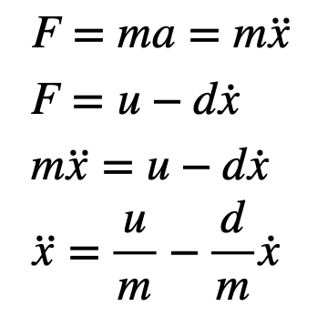
Fig 1: Dynamics Equations
In state space, these equations become:
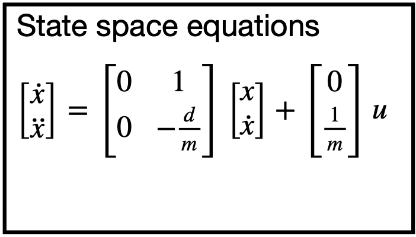
Fig 2: State Space Equation
Where A is the 2x2 matrix and B is the 2x1 matrix shown above.
We also have the C matrix, which is C = [1,0] instead of the [-1,0] we had in class, as our measurements are positive and velocities negative.
Now, d is defined as: d = u_ss / xdot_ss and m as: m = +d * t_0.9 / ln(0.1) (because our speeds are negative but unit response will be positive)
In order to obtain t_0.9 I created a RUN_to_WALL arduino case, which had the car move to the wall with a constant PWM = 120 through the main loop:
if(PWM_wall_active==true){
PID_time = millis();
if(PID_time - drive_start > 1000 && PWM == 1){PWM = 120;}
if(PID_time-drive_start > 5000){
PWM_wall_active=false;stopCar(PWM);
error_i = 0;
for(int i=0;i < PID_counter; i++){
tx_estring_value.clear();
tx_estring_value.append("T:");
tx_estring_value.append(timestamps[i]);
tx_estring_value.append(",A:");
tx_estring_value.append(ToFs0[i]);
tx_estring_value.append(",S:");
tx_estring_value.append(PWMs[i]);
tx_characteristic_string.writeValue(tx_estring_value.c_str());
}
continue;
}
curr_pos = ToFmeasurement(); // now the error is no longer 0
ToFs0[PID_counter] = curr_pos;
error_p = curr_pos - goal_pos;
timestamps[PID_counter] = PID_time;
if(error_p < 10){stopCar(PWM); PWM = 0;}
moveCar(PWM);
PWMs[PID_counter]=PWM;
PID_counter +=1;
PID_prev_time = PID_time;
}
The data were captured by the computer via a handler too similar to the ones of the past, therefore it will not be included in this report to make it more legible.
After plotting said data I got the following plots:
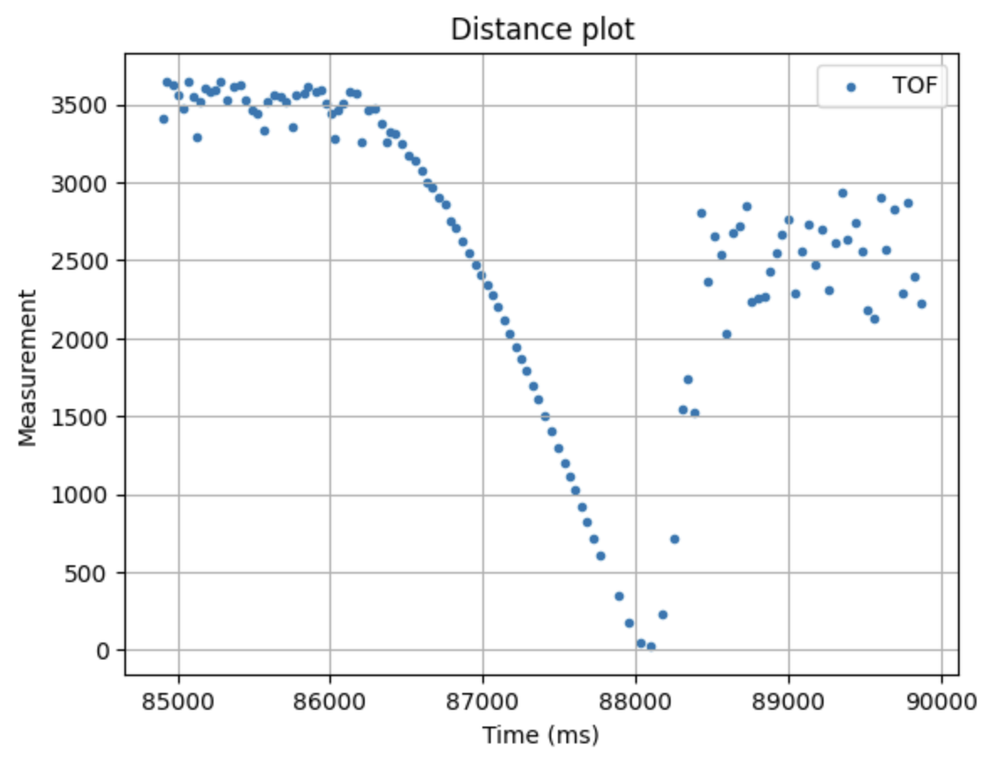
Fig 3: ToFs plot
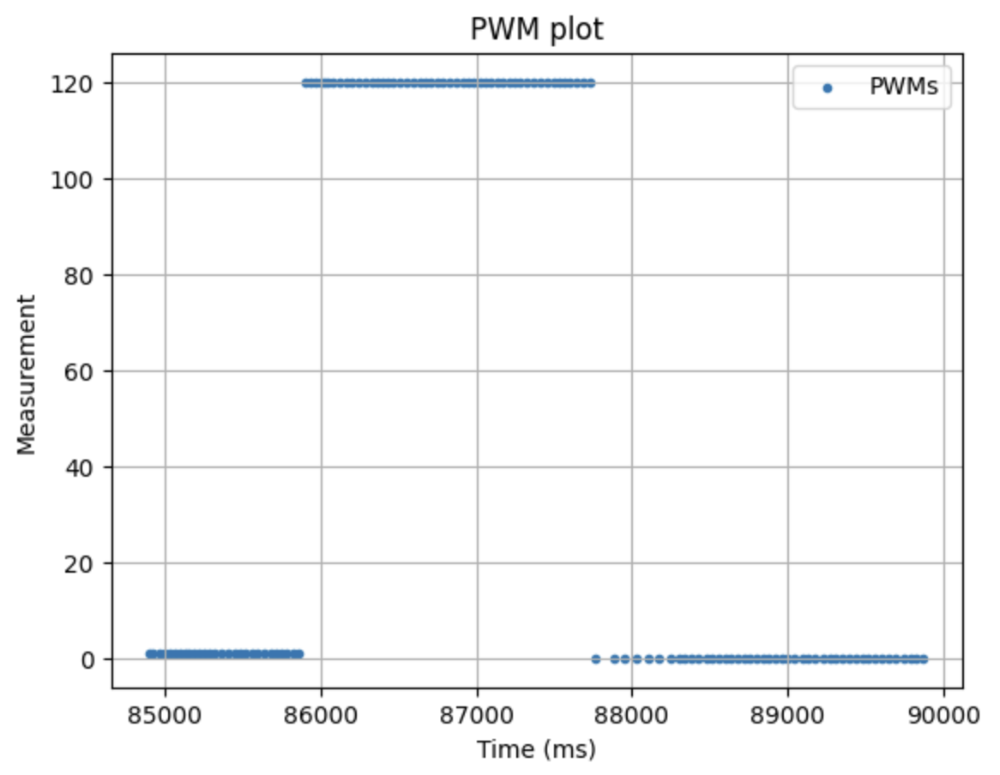
Fig 4: PWMs plot
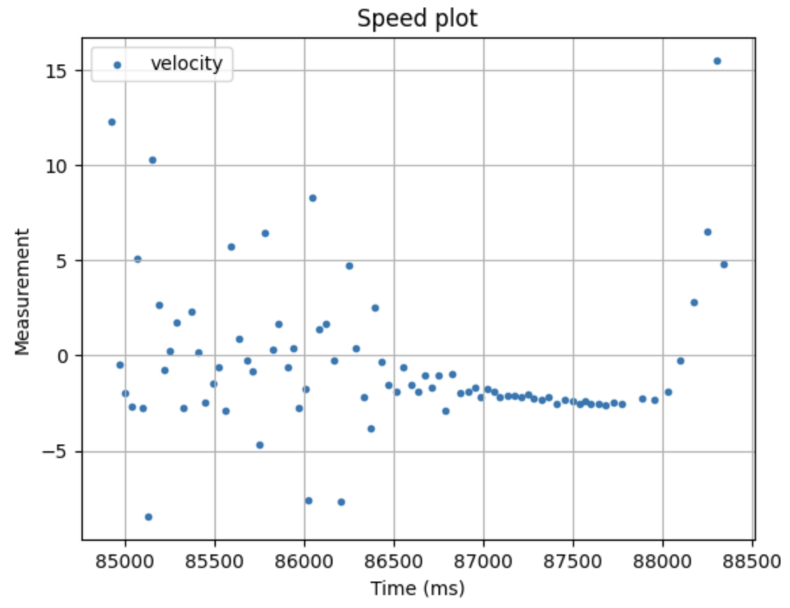
Fig 5: Speeds plot
I found it weird that the ToF would be to noisy when not moving, and so accurate moving. After cleaning the data and analazying it, I got the following plot:
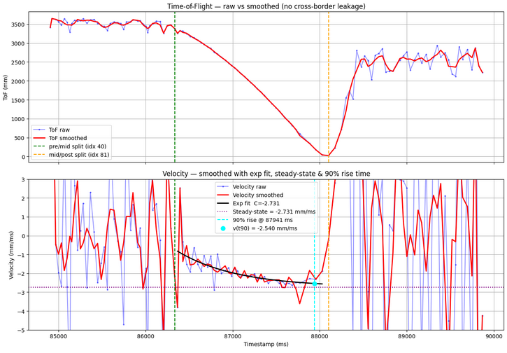
Fig 6: Final analysis plot
From the plot above, we can see that our 90% rise time is at 87941ms. If we subtract the first time entry we counted towards rise time (86334 ms) we get:
t_09 = 87941 - 86367 = 1574 ms
We can also see that the steady state speed is xdot_ss = -2.731 mm / ms
For now, u_ss is going to be set to 1, so that it can be scaled relative to 120. When u is 0.5 it will be for PWM = 60, and when it's 2, it will be for PWM = 240.
Now, we get d as: d = 1 / 2.731 = ~ 0.3662 and, plugging it in m we get: m = 0.3662 * 1.574 / ln(0.1) = ~ 0.2503
As these are for S.I. but our ToF sensors are getting measurements in mm, we have to divide them by 1000 to work for mm.
Final coefficients: d = 0.0003662 and m = 0.0002503
This makes -d/m = ~1.463 and -1/m = -3995.21
As a result, our A, B matrices are:
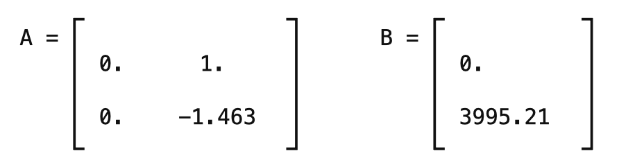
Initialization of KF (Python)
With the following code, I got my discretized matrices:
d = 0.0003662
m = 0.0002503
A = np.array([[0,1],
[0,-d/m],])
B = np.array([[0],
[-1/m],])
usefulTimestamps = Timestamps[0:75]
deltat = []
ttotal = 0
for i in range(len(usefulTimestamps)-1):
deltat = (usefulTimestamps[i+1] - usefulTimestamps[i])/1000
ttotal += deltat
Delta_T = ttotal / (len(usefulTimestamps) - 1)
Ad = np.eye(2) + Delta_T * A
Bd = Delta_T * B
C = np.array([[1,0]])
print(Ad, Bd, C)
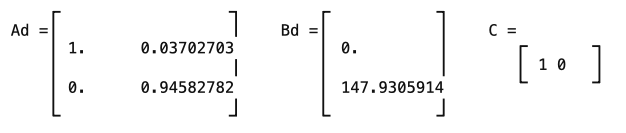
Fig 7: Discretized Matrices
Important Note: the second entry of B (and Bd) had negative sign to work
Then, the state vector was initialized with: x = np.array([[usefulToFs[0]],[0]])
To estimate the uncertainty, we have to define sigma 1, 2 and 3. sig_u is our process noise. It is the extend to which we trust the Kalman Filter. On the other hand, sig_z is our sensor noise. It is hwo muhc we trust the ToF sensor.
For our process noise, sigma_1 is how much we trust the position of our model, while sigma_2 is the trust in the velocity of the model. These two were set to sigma_1=sigma_2=sqrt(100/dt)= 52.97, with a dt of 0.03702 inintially, translating to an uncertainty of ±52.97mm
For the sensor noise, sigma_3 was set to 10mm because despite the noise while static, when moving, the sensor was very accurate as per Fig. 3
sigma_1 = 52.97 # in mm
sigma_2 = 52.97
sigma_3 = 10
Sigma_u=np.array([[sigma_1**2,0],
[0,sigma_2**2]])
Sigma_z=np.array([[sigma_3**2]])
print(Sigma_u, Sigma_z)
The resulting matrices are:
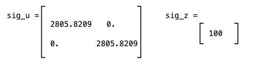
Implementation and testing of KF in Jupyter
Now it's time to implement and test the Kalman Filter on Jupyter. The following code was given to us:
def kf(mu,sigma,u,y):
mu_p = A.dot(mu) + B.dot(u)
sigma_p = A.dot(sigma.dot(A.transpose())) + Sigma_u
sigma_m = C.dot(sigma_p.dot(C.transpose())) + Sigma_z
kkf_gain = sigma_p.dot(C.transpose().dot(np.linalg.inv(sigma_m)))
y_m = y-C.dot(mu_p)
mu = mu_p + kkf_gain.dot(y_m)
sigma=(np.eye(2)-kkf_gain.dot(C)).dot(sigma_p)
return mu,sigma
To test whether my uncertainty matrices were "correct" in terms of order of magnitude, I first ran the KF with a constant u=1 and the data which I used to derive d and m. (There, PWM=constant=120)
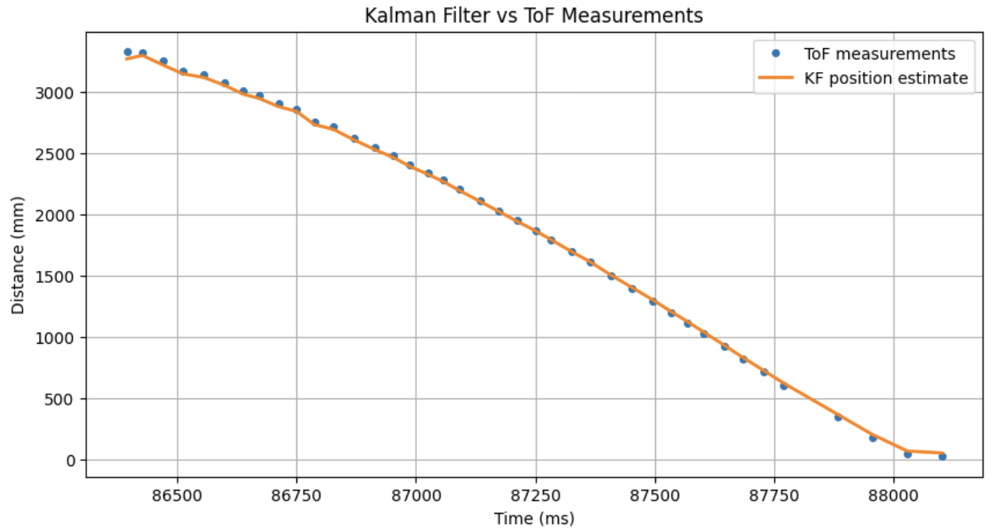
Fig 8: KF vs actual ToF measurements
This tells me that the values I have selected are good in terms of order of magnitude.
If I change sigma_1=sigma_2=0.52, the result is a very very bad KF which essentially says that the model has very little uncertainty and thus the sensor measurements aren't utilized nearly enough:
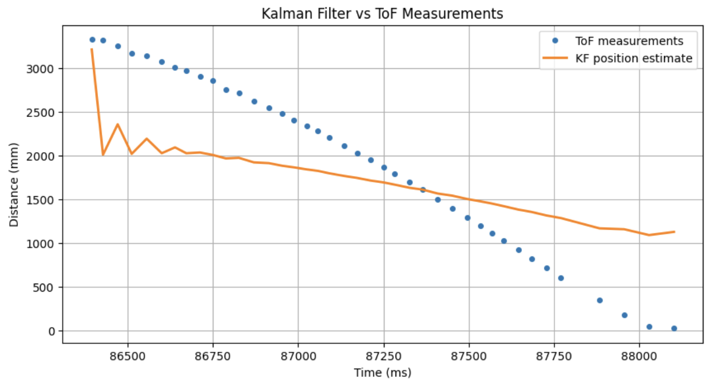
Fig 9: "Broken" Kalman Filter
After running the PI control to have Zeus run to the wall, this is the resulting plot:
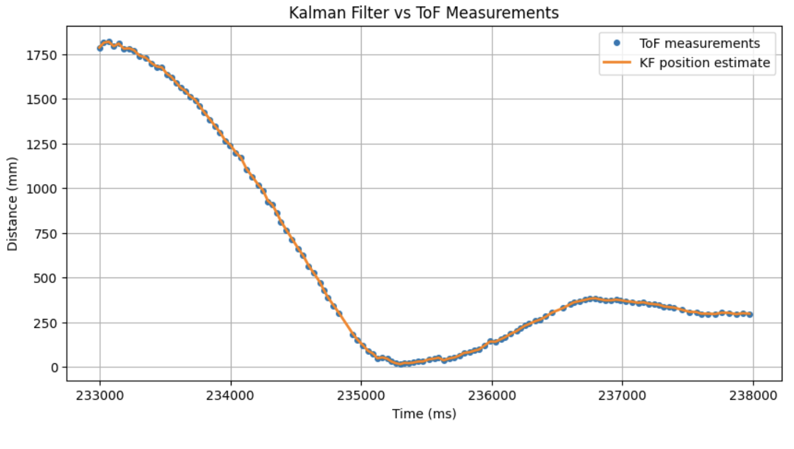
Fig 10: Experimental Kalman Filter comparison to actual ToF
The line is actually tracking the points extremely well. I added a delay when the car would reach the 304mm target distance and we can see that the Kalman Filter still follows the next measurement very well. This makes sense, because my two sig matrices show that we think the sensor has much much less uncertainty than the model.
If I change sig_z and make it 3600 by having sigma_3 = 60, the result is:
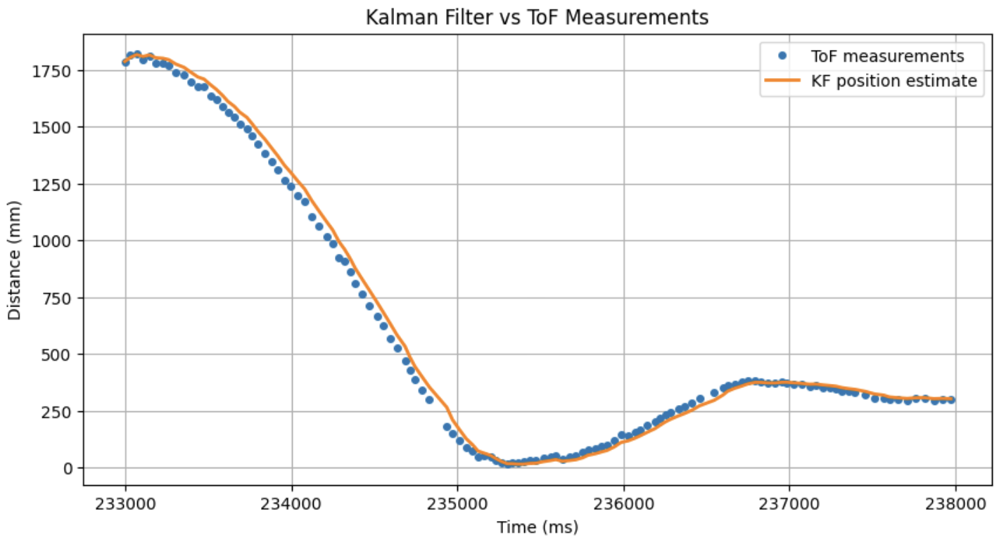
Fig 11: KF putting more trust in model
Here, the KF position estimate doesn't follow the points as closely, because it is trusting the model more than the measurements.
Implementation of KF on the Robot
To implement the KF on my robot I first added the following in the beginning of the file which are from the calculations I did on jupyter:
//// KALMAN FILTER
Matrix<2,2> Ad = {1, 0.04112397,
0, 0.93983381};
Matrix<2,1> Bd = {0.0,
-164.29870932};
Matrix<1,2> C_kf = {1, 0};
// Noise covariance
Matrix<2,2> Sigma_u = {2805.82, 0,
0, 2805.82}; // sigma=52.97 squared
Matrix<1,1> Sigma_z = {100.0}; // sigma=10 squared
// KF state
Matrix<2,1> kf_mu = {0, 0};
Matrix<2,2> kf_sigma = {2805.82, 0,
0, 2805.82};
bool kf_initialized = false;
float kf_pos = 0;
I also added the following function to do the predict and update step:
void kalmanFilter(float measurement, float pwm_input) {
Matrix<1,1> u_kf = {pwm_input / 120.0f};
Matrix<1,1> y_kf = {measurement};
// Predict
Matrix<2,1> mu_p = Ad * kf_mu + Bd * u_kf;
Matrix<2,2> sigma_p = Ad * kf_sigma * ~Ad + Sigma_u;
// Update
Matrix<1,1> sigma_m = C_kf * sigma_p * ~C_kf + Sigma_z;
Matrix<2,1> kf_gain = sigma_p * ~C_kf * Inverse(sigma_m);
Matrix<1,1> y_m = y_kf - C_kf * mu_p;
kf_mu = mu_p + kf_gain * y_m;
kf_sigma = (Matrix<2,2>({1,0,0,1}) - kf_gain * C_kf) * sigma_p;
}
The other additions I made to my PID code were small and not worth pasting the entire code block.
The following video shows the car performing the WALL PI movement. There, just to test the implementation I just had the KF output logged to see how it compared with my python tests.
Video 1: Robot performing PI motion to wall.
These plots show the comparison between ToF measurements and KF predictions, and PWM values:
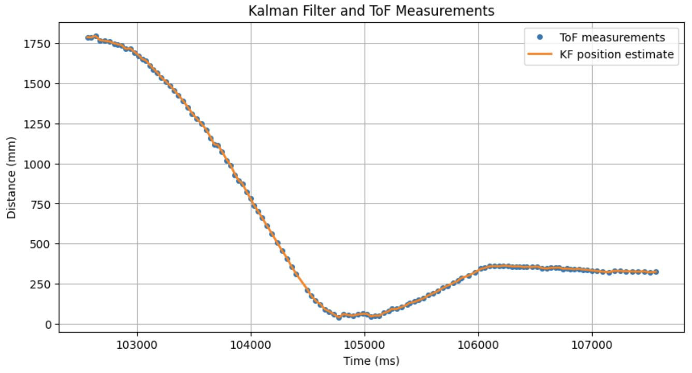
Fig 12: ToF and KF values of test run
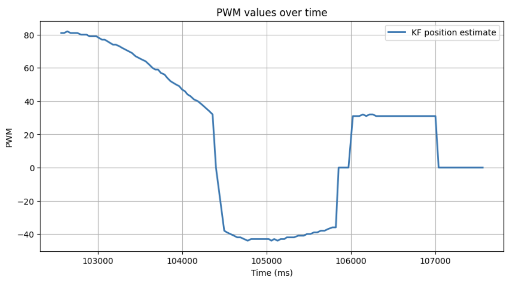
Fig 13: PWM values for test run
Up until now the prediction was only happening on measured ToF data. And since the measurement held a lot of weight, it was only natural that the KF would follow the measurements curve.
To fully implement the KF so that it predicted the position of the car even when no ToF measurements were available, I firstly changed sigma_1 and sigma_2 to 60 (Sigma_u = 3600) to increase model uncertainty. I also made a new KF function to be able to call predict without having a new ToF measurement, and I also had it dynamically calculate the Ad and Bd matrices based on the measured dt between the loop iterations:
void kalmanPredict(float pwm_input, float dt_actual) {
float dt_seconds = dt_actual / 1000.0;
Matrix<2,2> Ad_dynamic = {1.0, dt_seconds,
0.0, 1.0 - 1.463 * dt_seconds};
Matrix<2,1> Bd_dynamic = {0.0,
-3995.21 * dt_seconds};
Matrix<1,1> u_kf = {pwm_input / 120.0f};
kf_mu = Ad_dynamic * kf_mu + Bd_dynamic * u_kf;
kf_sigma = Ad_dynamic * kf_sigma * ~Ad_dynamic + Sigma_u;
}
void kalmanUpdate(float measurement) {
Matrix<1,1> y_kf = {measurement};
Matrix<1,1> sigma_m = C_kf * kf_sigma * ~C_kf + Sigma_z;
Matrix<2,1> kf_gain = kf_sigma * ~C_kf * Inverse(sigma_m);
Matrix<1,1> y_m = y_kf - C_kf * kf_mu;
kf_mu = kf_mu + kf_gain * y_m;
kf_sigma = (Matrix<2,2>({1,0,0,1}) - kf_gain * C_kf) * kf_sigma;
}
void kalmanFilter(float measurement, float pwm_input, float dt) {
kalmanPredict(pwm_input, dt);
kalmanUpdate(measurement);
}
Additionally, I made the loop as fast as possible and when ToF data are not available, only KF predicted data are passed to the PI control like so:
kalmanPredict((float)PWM, (float)(PID_time-PID_prev_time));
if(distanceSensor0.checkForDataReady()){
ToF_measurement = distanceSensor0.getDistance();
kalmanUpdate(ToF_measurement);
distanceSensor0.clearInterrupt();
}
ToFtimestamps[PID_counter] = PID_time;
ToFs0[PID_counter] = ToF_measurement;
kf_pos = kf_mu(0,0);
KF_ToFs[PID_counter]=kf_pos;
//error_p = curr_pos - goal_pos; // OLD ERROR
error_p = kf_pos - goal_pos; // KF based error
error_i += error_p*(PID_time-PID_prev_time)/1000;
Now we can see the result of the implemented KF:
Video 2: Robot performing PI motion to wall with KF predictions.
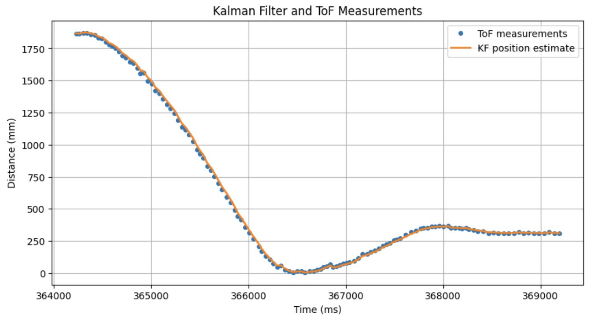
Fig 14: ToF and KF values of implementation run
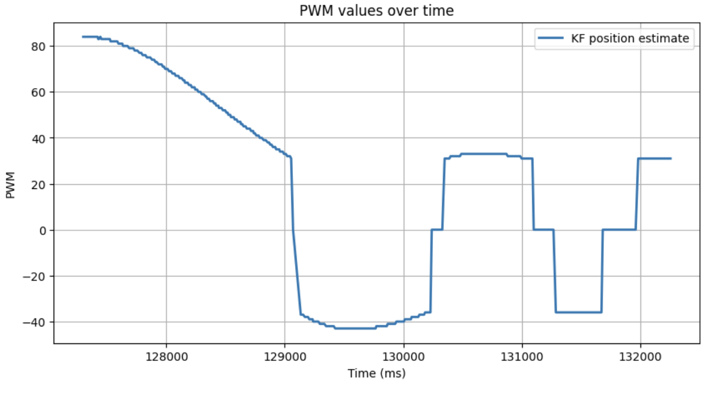
Fig 15: PWM values for implementation run
As our model isn't really accurate, and the ToF is fairly reliable when moving, I decided to keep my KF's uncertainties like this fow now. In later labs, I might go back and increase the ToF uncertainty if I determine it is needed.
Discussion
KF Parameters:
- m: m is a proxy for the mass of the car. Higher m leads to higher momentum (acelerates and deccelerates less).
- d: d is a drag coefficient, which affects max speed and passive deceleration when the input to the car is 0.
- σ1/σ2: sigma 1 and 2 are the uncertainy of our car's model.
- σ3: sigma 3 is the uncertainty of the sensor's measurements. -> Having σ1/σ2 < σ3, means that we place more trust in our model, than our sensor measurements. Conversely, σ3 < σ1/σ2, means we put more trust in our sensor measurements (which is also what I have done).
Lab 7 successfully employed a Kalman Filter for the car.
Collaboration
I used Claude for plotting and some debugging, and referred to Aidan Derocher's and Lucca Correia's websites for structuring this lab report.